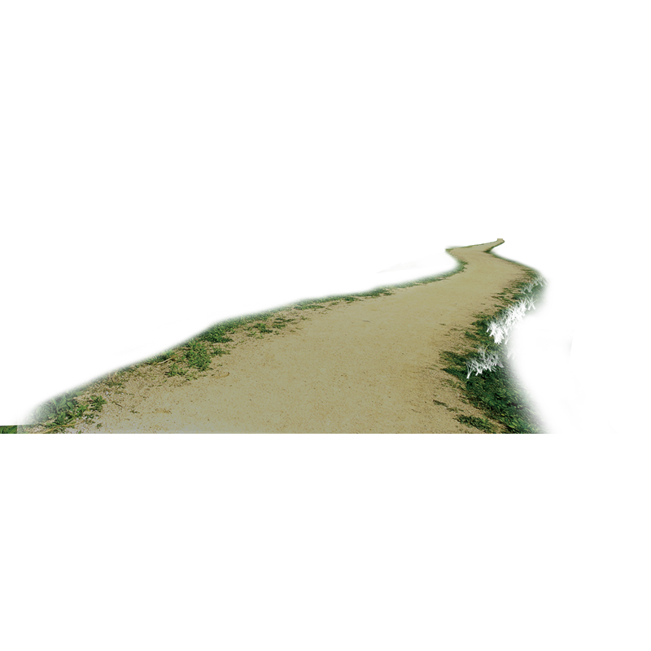
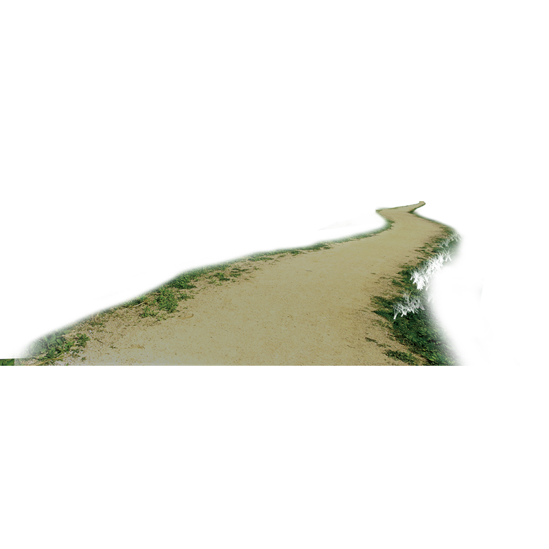

Level 4
The Maze
The old lady told me to go talk to the Medium. Apparently I have to go through Pleasantville's Enchanting Corn Maze in order to get there..
The old lady told me to go talk to the Medium. Apparently I have to go through Pleasantville's Enchanting Corn Maze in order to get there..
Oh no! The gates to the maze are closed. Lets go see if we can get some help to open them..
"Before you can go into the maze you must get me a cup of coffee"


 
